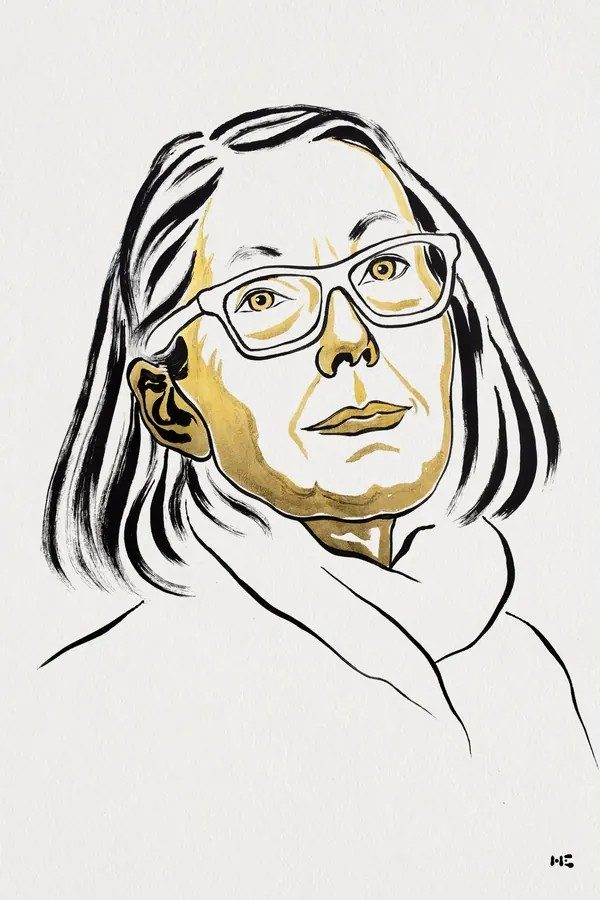
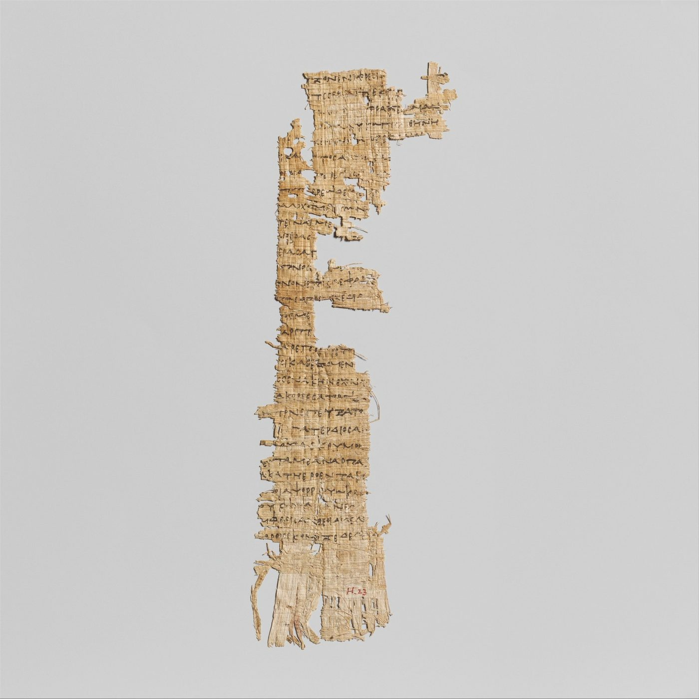
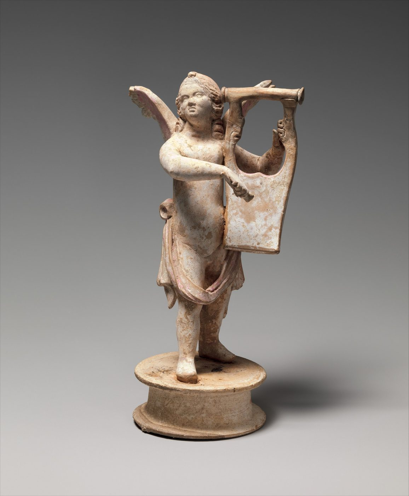
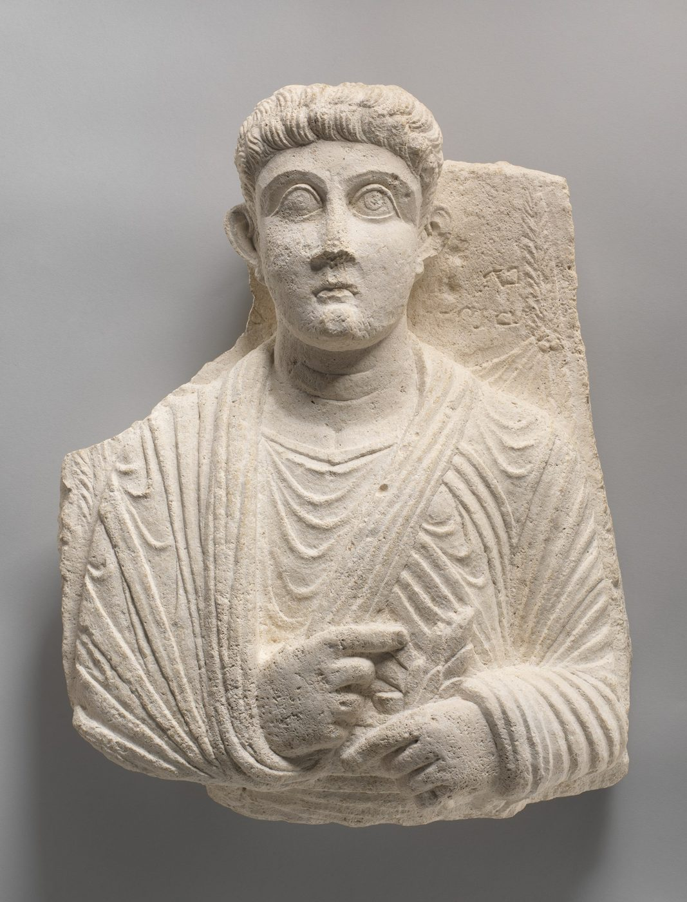
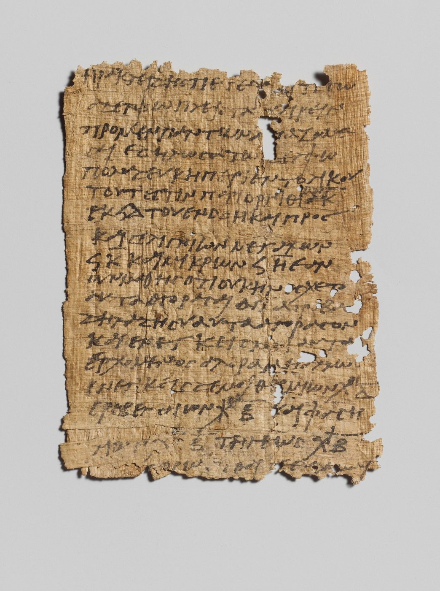
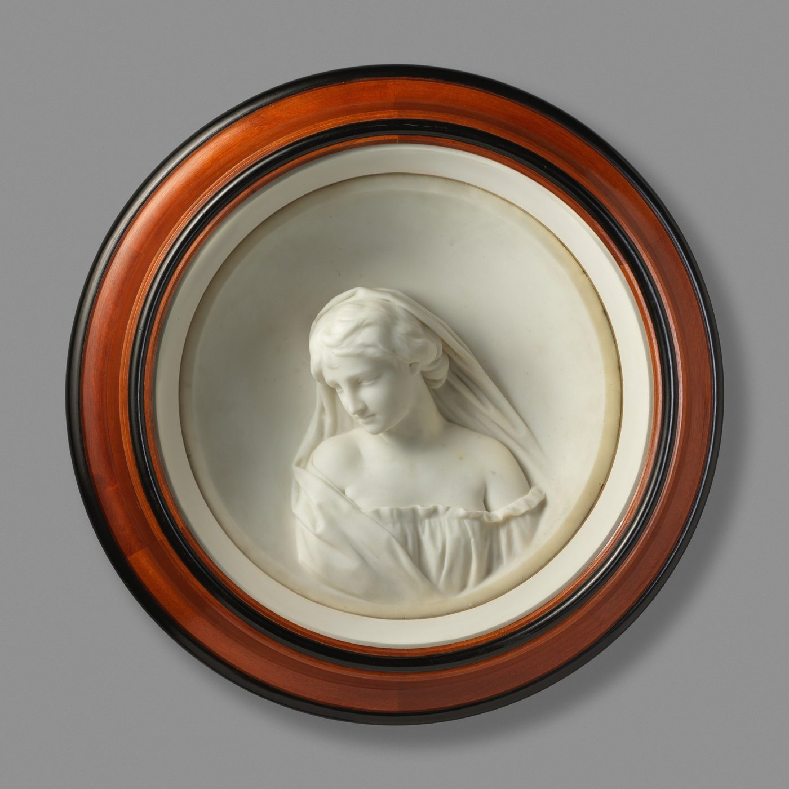

“for her bold and inventive oeuvre that, in playful dialogue with the classical tradition, has created new forms for contemporary literature”
官方颁奖词：她大胆而富有创造力的作品，在与古典传统嬉戏般的对话中，为当代文学创造了新的形式。
“The Nobel Prize in Literature for 2026 is awarded to the Canadian author Anne Carson…”
她 1950 年生于加拿大多伦多。1981 年，她出版了自己在古典学（研究古希腊罗马语言文学的学问）的博士论文，题目是拉丁文《Odi et Amo Ergo Sum》。此后四十多年，她的三件事一起做：写诗、翻译古典希腊语、在几所大学教书。
官方给出的总概括是：她几乎全部作品都落在语文学家对词语的执念与诗人对新意义的渴望的交汇处。她自己则说，一切工作的起点是词的词源。


“…she speaks of a ‘stereoscopic vision’ that allows her to ‘hold in equipoise two perspectives at once’.”
卡森说自己是「立体视觉」：一只眼睛不够，要两只同时看同一个东西，才看得出远近。落到写作上，就是让两个本来相隔极远的视角同时在场，且不给任何一方让路。
官方说，正是靠这种把两个视角同时握在平衡里的能力，她脱离了绑定在叙事自我上的抒情诗——不再是一个「我」对着空气说自己的心事，而是让好几个人同时在场上说话。
“With a precise feel for contemporary idioms and experiences…”
官方说，这部作品展示了她让古典文学传统在当下真正活过来的能力，也常被推为卡森最伟大的一部。
她从公元前六世纪希腊诗人斯特西科罗斯关于红翼怪物革律翁的残篇出发。神话里，赫拉克勒斯为完成自己的一项功业杀死了革律翁、抢走他的牛群；卡森把这个可怕的巨人改写成依恋母亲的温柔「英雄」，于是它成了一部现代的成长小说。
少年革律翁先遭兄长侵害，随后爱上了自负而粗鲁的赫拉克勒斯。官方把它概括为一个古老的问题：当你爱上一个终将毁掉你的人，会发生什么？

官方说，这首长诗展示了长诗能把体裁边界模糊掉的潜力：它写成分行的诗，同时也是一个关于失去与单恋的长故事。
叙述者是一位被丈夫离开的女性，她去看望独居在荒原上的母亲；同行的行李里是她最爱的作家艾米莉·勃朗特的书。勃朗特的荒原与她的内心世界，就这样被织进文本里。
它围绕「厨房桌边的三个孤独女人」构成——既是长诗，也是一次对勃朗特的阅读，最终变成一篇关于被遗弃的论文。官方说：诗需要故事，故事又依赖诗的跳跃与场景转换，而卡森把这些手法用得极为精湛。


官方把这本书描述成「一个盒子，里面是折页展开的图片、信件和其他文字」，并说它「既是文学也是雕塑」。它为纪念她哥哥迈克尔而作——他 2000 年在丹麦去世，此前一直下落不明。书中第三个声音是卡图卢斯：他那首著名哀歌也是写给客死异乡的亡兄。
萨福的诗没有一首完整传下来。她活在公元前六世纪的莱斯博斯岛，作品靠后人的引用、以及埃及沙漠里挖出的纸草碎片拼回来——纸上常有洞、有断行、有只剩一半的词。
古典学的通行做法是用方括号 [ ] 标出「这里原本有字，但没有留下来」。卡森把萨福的残篇译成英文，并且把缺口也一起译出来：一行行印着 [ ] 的地方不是排版事故，是这首诗现在真实的样子。
官方说，她译自古典希腊语的作品「本身可被视为独立作品」——不是搬运，是写作。

官方记载，卡森曾把无聊称为她的头号敌人（arch-enemy），而她对付它的方式是「极端的幽默与机智」。
这本书就是那种气质：它写一场尖锐、带讽刺的婚姻争吵，共 29 段，每一段都以浪漫派诗人约翰·济慈的诗句开篇。济慈关于「美即是真」的崇高句子，被既残酷又俏皮地放进一场使人疲惫的夫妻对峙里。
官方还提到她与视觉艺术家、编舞、歌剧与戏剧导演的合作——这些合作同她的书一样，都在回答同一个问题：一首诗可以长成什么形状？
本册全部事实与英文引语来自诺贝尔奖官方页面（2026-10-08 发布），未采用任何二手转述。中文除标明为引语外，均为转述。